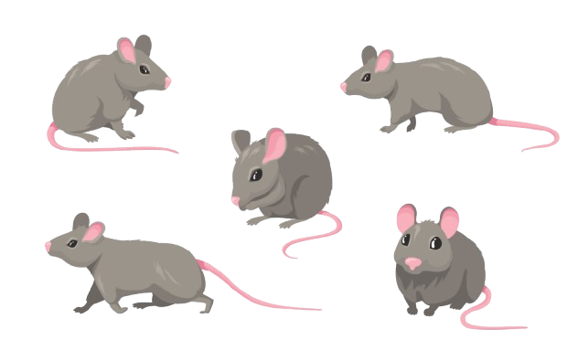

This resolution and lower ones are not supported by this application.
Change to a bigger resolution to use the app
(>1100px of width)
You can view other pages such as:
v

 MOUSEFRAME - Mus musculus gait/footprint analysis
MOUSEFRAME - Mus musculus gait/footprint analysisWelcome to Mouseframe!
Change app versionLogoutManually input known value of pixels in 1 cm or use saved values (choose only one of the options and click use):
ORIf you have a value you want to save, use the fields below to add the value in pixels and the size of the image you took the value from (both fields are required to save).
Important: Saving both these values allows for better practice and prevents the usage of such values in different sized images which is not correct.
| Table ID: | ||||
| Entry Number | Points | Measurement type | Value(px) | Value(cm) |
|---|---|---|---|---|